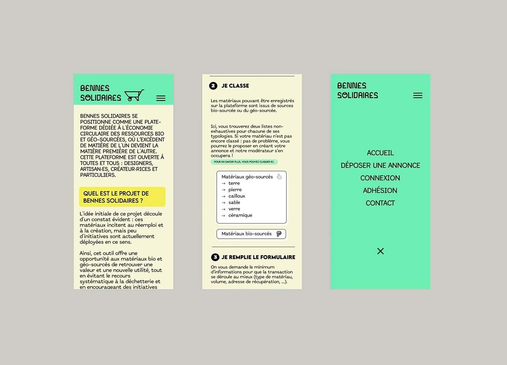
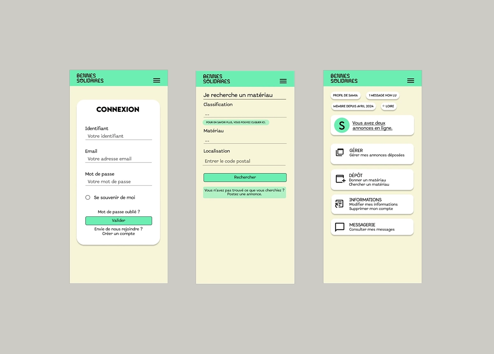

Bennes solidaires se positionne comme une plate-forme dédiée à l'économie circulaire des ressources bio et géo-sourcées, où l’excédent de matière de l'un·e devient la matière première de l'autre. Cette plateforme est ouverte à toutes et tous : designers, artisan·es, créateur·rices et particuliers. Le projet aborde la gestion et la valorisation des ressources bio-sourcées et géo-sourcées, souvent gaspillées ou mal distribuées. En facilitant leur réemploi, la plateforme permet de réduire le recours à la déchetterie et encourage l'utilisation de matériaux encore exploitables.
Commanditaire : Projet d'entreprenariat
Année : 2024
Missions : Web, maquette, work in progress